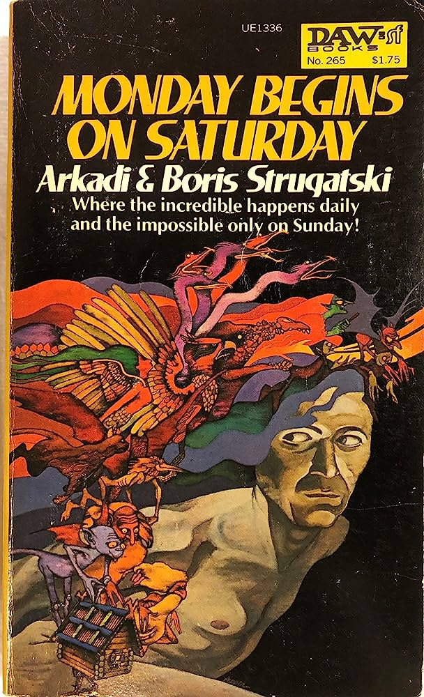
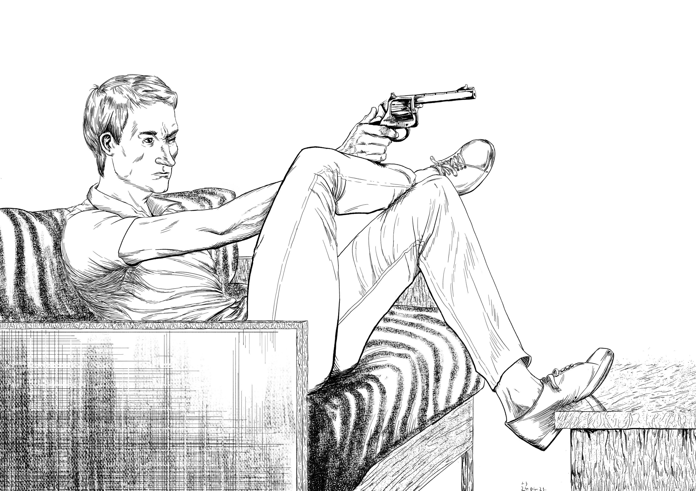

Pozdrav, ja sam Ivan Trobić. Porijeklom iz Nove Gradiške, ljubitelj sam svega i svačega, od knjiga i video igara do sporta i komedije.
Prije nego što sam naučio pisati, bio sam za računalom i igro igrice. Uglavnom pucačine, strateške i RPG igrice, najdraža serija iz djetinjstva mi je Metro serija pucačina koju sam prvi put igro kao demo preko CD-a iz Bug magazina.
Ta serija igrica je i razlog moje ljubavi za romane. Priča igrice je napravljena prema romanima istoga imena koje je napisao ruski pisac Dmitry Glukhovsky. To su bili prvi romani koje sam krenuo čitati izvan lektira, i od njih imam ljubav za sci-fi. Najdraži pisci su mi braća Arkady i Boris Strugatsky.
Izvan igara, čitao sam i stripove te sam iz djetinjstva pomalo crtao, no hobi crtanja mi je tek procvjetao tijekom izolacija tijekom korone.
Navijam za Chelsea FC iz Engleske i najdraži komičar mi je Norm Macdonald.